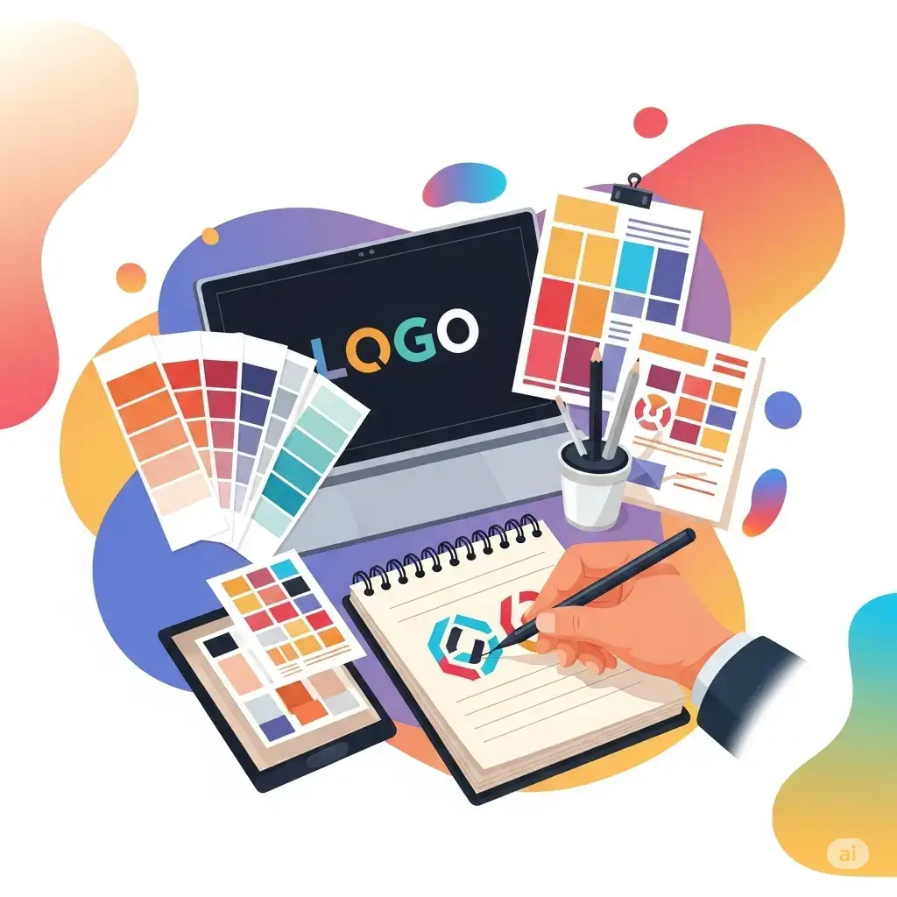
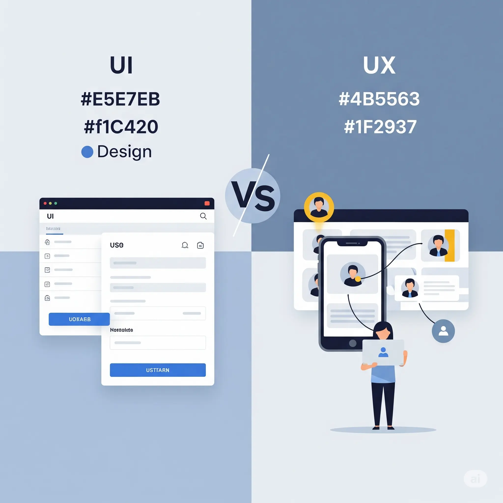
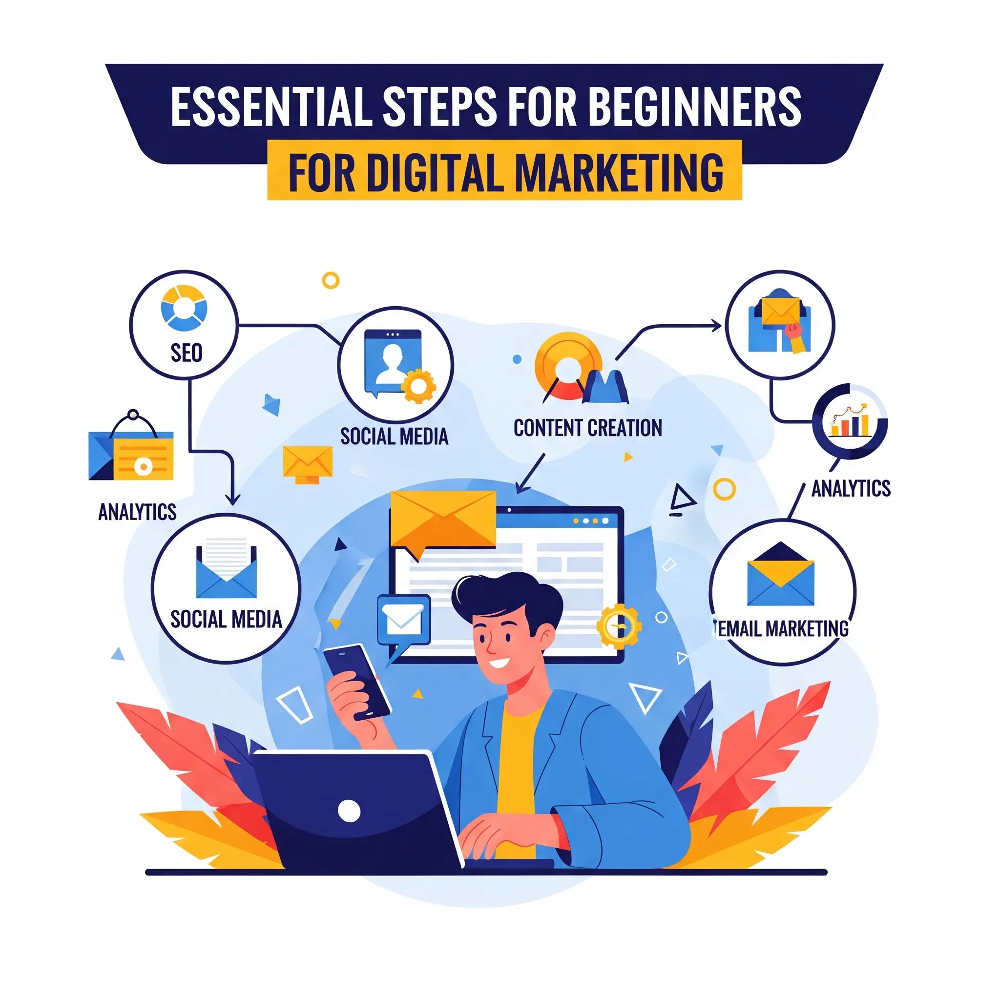

📚 مقالات ومشاركات المدونة
من هو سيف الإسلام الفقيه؟
اكتشف كيف يجمع سيف بين التسويق، التصميم، البرمجة وتحليل البيانات ليقدّم خدمات احترافية متكاملة.
اقرأ المزيد5 خطوات لبناء علامة تجارية رقمية قوية

تعرف على الأساسيات التي يجب أن تعتمد عليها لتأسيس هوية رقمية ناجحة في سوق تنافسي.
اقرأ المزيدما الفرق بين UI و UX؟

إذا كنت مصممًا، فلا بد أن تعرف الفرق بين تصميم واجهة المستخدم وتجربة المستخدم.
اقرأ المزيدكيف تبدأ في التسويق الرقمي: خطوات للمبتدئين

دليل شامل لكل من يريد الدخول إلى عالم التسويق الرقمي بخطوات واضحة وبسيطة.
اقرأ المزيد